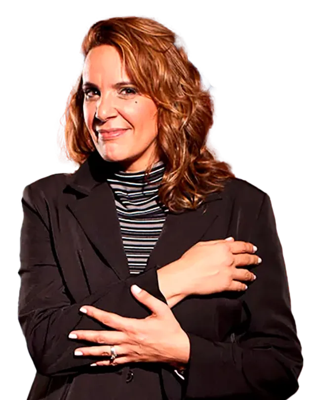
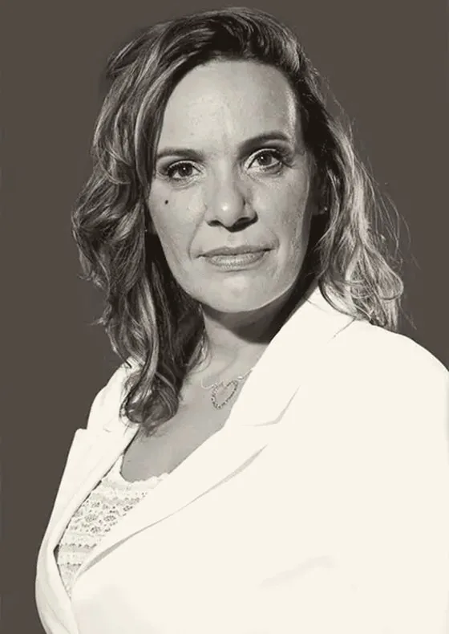

Tricologista em Vila Nova Conceição, São Paulo
Terapia capilar com a técnica que Patrícia Maciel aprendeu no Japão
Primeira aluna ocidental da Takara Belmont, Patrícia trouxe para São Paulo um cuidado voltado à célula viva do cabelo. Tudo começa por uma avaliação capilar detalhada, que olha para hábitos, rotina e couro cabeludo para entender o que está por trás da sua queixa.

A trajetória de Patrícia Maciel
Vinte e sete anos de terapia capilar em São Paulo
Patrícia passou seis anos em formação no Japão e voltou com uma convicção que guia o Núcleo até hoje: a queda de cabelo costuma ser um sinal de algo mais, e é isso que a avaliação procura entender.
“Não basta tratar os sintomas, é vital tratar as causas.”

Início de seis anos de formação na Takara Belmont, em Gifu, no Japão. Patrícia é a primeira aluna ocidental da instituição.
De volta ao Brasil, traz a técnica japonesa voltada à célula viva do cabelo e monta a equipe multidisciplinar do Núcleo Capilar.
Ao lado da tricologista Érika Egami, atende um público que busca discrição, cuidado e acompanhamento próximo.
Érika Egami tricologista do Núcleo
Na imprensa desde 2004
- 2004Folha de LondrinaA técnica japonesa da célula viva do cabelo chega ao Brasil.Ler reportagem da Folha de Londrina (abre em nova aba)
- 2011BondeQueda de cabelo também atinge adolescentes.Ler reportagem do Bonde (abre em nova aba)
- 2011ImiranteEspecialista alerta: estresse pode provocar a queda dos cabelos.Ler reportagem do Imirante (abre em nova aba)
- 2012Rede VidaParticipação no programa Vida Melhor sobre saúde dos cabelos.Assistir programa Vida Melhor na Rede Vida (abre em nova aba)
- 2012Rede VidaAprenda sobre a saúde dos cabelos.Assistir vídeo Aprenda sobre a saúde dos cabelos (abre em nova aba)
- 2014GuiameContenha a queda de cabelo.Ler reportagem do Guiame (abre em nova aba)
- 2018Ana Maria BragaTratamento para caspa e seborreia inclui boa alimentação.Ler matéria do site Ana Maria Braga (abre em nova aba)
Depoimentos
Quem já passou pelo Núcleo
Patrícia Maciel é uma expert de alto nível quando se fala em cabelos e couro cabeludo. Uma consulta extremamente detalhada de 2h e claras recomendações dos próximos passos.
Patrícia Maciel é uma excelente profissional — recuperou em tempo recorde o crescimento e nascimento de novos fios com o tratamento que fiz no Núcleo Capilar. Super recomendo!
Lugar super agradável e tranquilo, atendimento nota 10. Me senti super bem com o tratamento.
Maravilhosa desde que a conheço. Só acrescenta, com novidades como a do recente lançamento o Lava Pés. Cheguei do Rio e já estou marcando!
Adoro tratar meu couro cabeludo e cabelo na Patrícia.
Excelentes profissionais e atendimento nota 10.
Depoimentos reais de clientes. Os resultados variam de pessoa para pessoa.
Ver todas as avaliações no Google (abre em nova aba)Como funciona
Um método em quatro fases
Selecione cada fase para ver o que ela envolve.
Avaliação capilar
Uma conversa completa sobre histórico, hábitos e alimentação, somada a uma análise minuciosa do couro cabeludo e dos fios, para entender o que pode estar por trás da queixa.
Planejamento
Um protocolo individual, com a equipe de tricologistas e terapeutas do Núcleo. Quando o caso pede investigação médica, orientamos a procura por um dermatologista e trabalhamos em conjunto.
Descristalização
Remoção de resíduos e acúmulos do couro cabeludo que dificultam o nascimento de novos fios, preparando a pele para receber os ativos.
Estímulo ao crescimento
Fotobiomodulação e ativos específicos para estimular o couro cabeludo e fortalecer os fios que nascem a partir daí.
O que tratamos
Da queixa ao cuidado indicado
Se você procura cuidado para queda de cabelo, caspa, oleosidade excessiva ou couro cabeludo sensível, escolha uma queixa abaixo para ver o protocolo indicado. Os nove tratamentos completos vêm logo em seguida.
- Queda de cabelo
- Queda após o parto
- Cuidado após a quimioterapia
- Caspa e oleosidade excessiva
- Couro cabeludo sensível ou com coceira
- Fios quebradiços e pontas duplas
- Cabelo com dano químico
- Fios opacos e crescimento lento
- Estresse e ansiedade que refletem nos fios
- Antes e depois do transplante capilar
A terapia capilar é um cuidado complementar e não substitui o acompanhamento médico. Quando a avaliação indica uma condição que precisa de diagnóstico médico, como alopecias, eflúvio telógeno, psoríase, dermatite seborreica ou foliculite, orientamos a procura por um dermatologista e podemos atuar em conjunto com ele. Após quimioterapia ou transplante, os protocolos começam com liberação do médico responsável.
Os nove tratamentos do Núcleo
Protocolo central do Núcleo, indicado como cuidado complementar em casos de queda de cabelo, caspa, oleosidade, fios fragilizados, queda pós-parto e danos químicos. Em quadros como psoríase, dermatite seborreica ou queda após quimioterapia, atua junto ao acompanhamento médico. Sempre começa por uma avaliação com a tricologista, que define o protocolo.
Lavagem terapêutica dedicada ao relaxamento: óleos essenciais, aromaterapia, massagem no couro cabeludo, mãos e pés, terapia das águas e hidratação dos fios.
Sol, secador, chapinha, tintura e alisamento desgastam a camada lipídica do fio. A reposição lipídica hidrata, protege e devolve brilho, maciez e sedosidade, ajudando a reduzir a quebra e a fragilidade.
Blend de óleos essenciais associado ao LED azul, com ação calmante, que aumenta a permeabilidade do couro cabeludo e potencializa os ativos usados para equilibrar a oleosidade. Complementa, sem substituir, o tratamento dermatológico.
Lavagem do couro cabeludo e dos fios com técnicas de massagem japonesa, que deixa o cabelo mais hidratado e sedoso.
Prática integrativa que faz parte da Política Nacional de Práticas Integrativas e Complementares (PNPIC) do SUS. Usa essências florais para equilibrar emoções, fatores que também podem influenciar a saúde dos fios. Patrícia estudou cinco tradições: no Canadá, com Sabina Pettit (Pacific Essences); na Califórnia, com Patricia Kaminski e Richard Katz; na Inglaterra, os florais do Dr. Bach; na Austrália, com Ian White; e no Brasil, os florais da Mata Atlântica “Araretama”, de Sandra Epstein. A escolha da essência combina escuta, técnica e intuição, muitas vezes numa fórmula feita sob medida.
Remoção de resíduos e acúmulos que dificultam o nascimento de novos fios. Aumenta a permeabilidade do couro cabeludo e é uma etapa importante no cuidado de quadros de queda.
Luz de baixa intensidade aplicada no couro cabeludo para estimular o metabolismo das células e fortalecer a raiz. É um recurso complementar no cuidado da queda e pode ser usado antes e depois do transplante capilar, com liberação do cirurgião.
Lavagem profunda com ativos escolhidos para cada tipo de cabelo, que devolve definição, hidratação e brilho.
Questionário rápido
Não sabe por onde começar?
Três perguntas para sugerir um ponto de partida e já deixar o agendamento preenchido.
Suas respostas ficam só no seu navegador. Nada é enviado ou armazenado.
Agendar sessão
Reserve seu horário
Preencha os campos e a mensagem já vai pronta para o nosso WhatsApp.